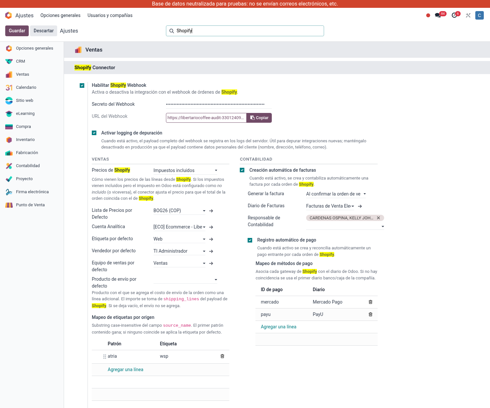
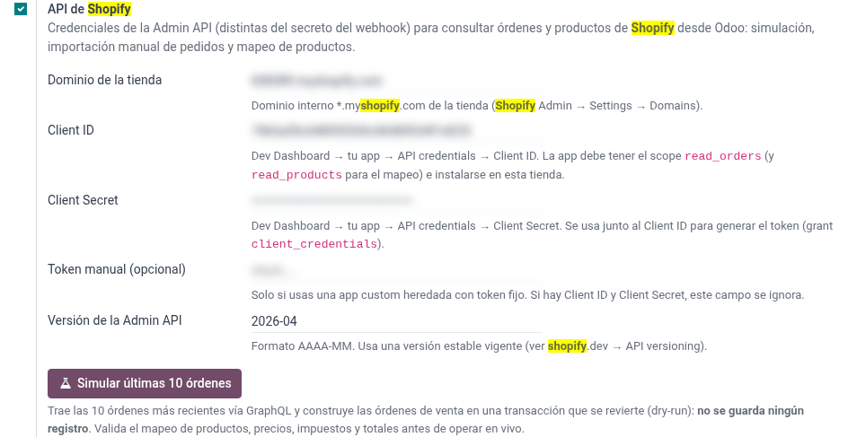
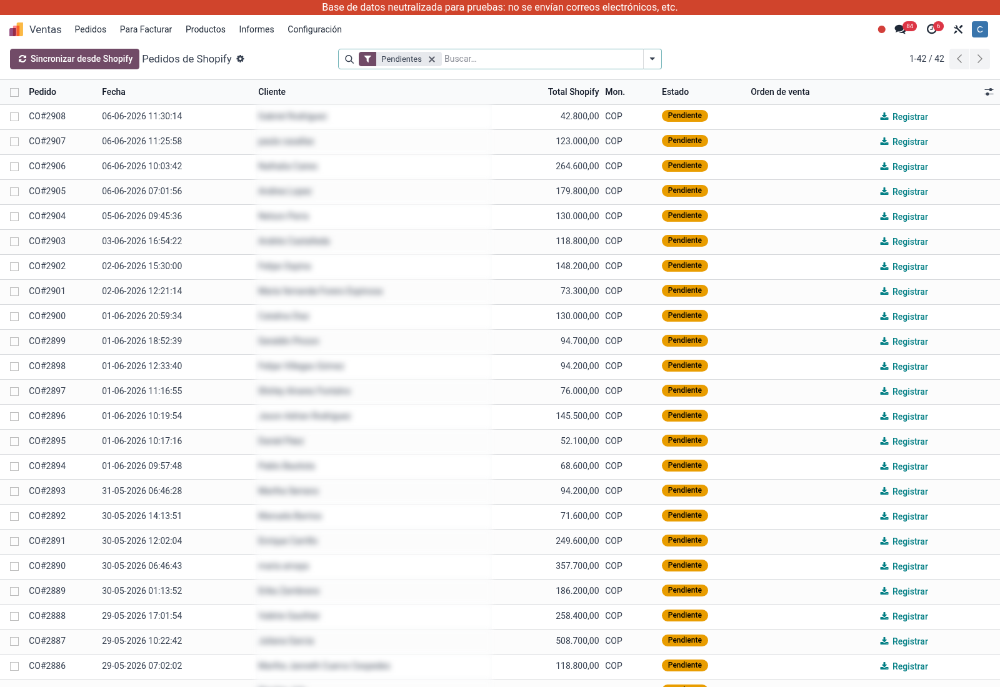
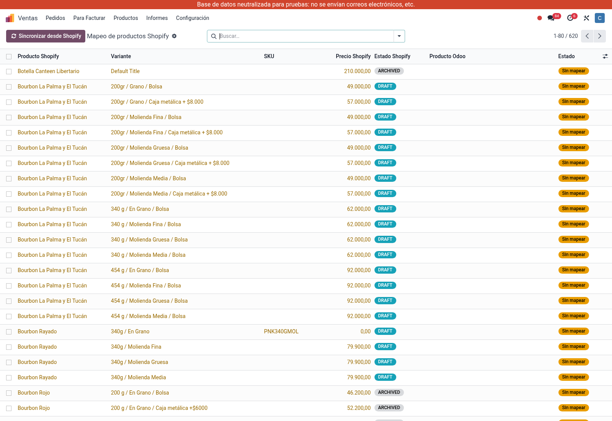

Odoo 17 · Sales / Sales · v17.0.1.9.1
Expone un endpoint HTTP que Shopify llama cuando se crea una orden. El módulo verifica la firma HMAC, busca o crea el cliente, los productos y la lista de precios, crea una orden de venta confirmada, opcionalmente genera la factura y registra el pago, y notifica por email a los responsables de almacén y contabilidad.
Además, mediante la Admin API de Shopify (autenticación
client_credentials), permite simular el mapeo
de las últimas órdenes, importar pedidos manualmente desde
un menú dedicado, y mapear los productos de Shopify a sus
equivalentes en Odoo.




Cada compañía tiene su propio secret, almacén, diario, mapeos y responsables. Activar / desactivar el webhook en una compañía no afecta a las demás.
Soporte para el header X-Shopify-Hmac-SHA256 con
comparación timing-safe. Cada compañía configura su propio
secret.
Factura al confirmar la orden, al validar la entrega de inventario, o después de N horas vía un cron horario.
Clave por shopify_order_id + company_id,
reforzada con pg_advisory_xact_lock y una constraint
UNIQUE: si Shopify reintenta el webhook (o se importa dos veces),
se devuelve skipped en lugar de duplicar la orden.
Asocia patrones del campo source_name de Shopify
con etiquetas de Odoo. Reordenable por prioridad con drag &
drop.
Cada gateway de Shopify (shopify_payments,
paypal, manual…) puede dirigirse a un
diario bank/cash diferente en Odoo.
Genera una etiqueta de envío (formato 1/8 de carta) adjunta a la notificación de almacén, con la dirección de entrega de Shopify.
Filtra product.taxes_id por la compañía de la orden,
evitando el clásico error "Incompatible companies on records".
Configura cómo vienen los precios desde Shopify (impuestos
incluidos o no) y el módulo ajusta el price_unit según
el price_include del impuesto en Odoo, de modo que el
total de la orden siempre coincide con el de Shopify.
Autenticación client_credentials (Client ID + Secret
del Dev Dashboard) con token cacheado 24 h. Consulta órdenes y
productos por GraphQL sin depender del webhook.
Trae las últimas 10 órdenes y construye las ventas en una transacción que se revierte: valida el mapeo de productos, precios, impuestos y totales sin guardar nada.
Menú Ventas → Pedidos de Shopify: sincroniza los pedidos recientes y registra en Odoo los que elijas (individual o en lote), respetando la idempotencia.
Menú Ventas → Productos → Mapeo de productos Shopify: asocia
cada variante de Shopify a su product.product. El
webhook y la importación resuelven el producto por variante o SKU
antes de crear placeholders.
La descripción del producto en la entrega (description_picking)
refleja la de la línea de venta tal como llegó de Shopify, no la
descripción genérica del producto.
Vendedor, equipo de ventas y producto de envío por defecto configurables por compañía, aplicados a las órdenes generadas.
Notifica a los responsables de almacén y contabilidad, dejando además traza en el chatter del registro correspondiente.
POST /shopify/order/<company_id>
│
▼
1. Validar compañía y que enable_shopify_webhook = True
2. Verificar HMAC-SHA256 (si la compañía tiene secret)
3. Parsear JSON
4. Idempotencia: si shopify_order_id ya existe → 200 'skipped'
(advisory lock + UNIQUE como defensa en profundidad)
5. Cargar configuración desde res.company
6. Resolver almacén (fallback: primero de la compañía)
7. Buscar/crear partner (por VAT / email / teléfono)
8. Construir líneas de orden:
├─ Resolver producto (mapeo por variante/SKU → SKU → placeholder)
├─ Filtrar impuestos por compañía
├─ Ajustar precio según "Precios de Shopify" + price_include
├─ Línea de envío (producto de envío configurado)
└─ Aplicar cuenta analítica
9. Crear sale.order (vendedor/equipo por defecto), confirmar
10. Si auto_invoice, según trigger:
├─ on_confirm → factura inmediata
├─ on_delivery → factura cuando el picking se valida
└─ delayed → cron horario factura tras N horas
11. Si auto_delivery → notifica al equipo de almacén
12. Responde 200 con {'status': 'success', 'order_id': N}
Toda la configuración vive en Settings → Sales → Shopify Connector y se guarda por compañía. Activa el master toggle y completa los campos.
*.myshopify.comclient_credentials automático y cacheado 24 hread_orders, read_products
La factura se genera, postea y notifica al recibir el
webhook. Si auto_payment está activo, también
se registra y reconcilia el pago entrante.
Cuando el picking pasa a estado done, el módulo
dispara la facturación vía override de
stock.picking._action_done(). Soporta entregas
parciales.
La orden se marca con un timestamp futuro
(shopify_invoice_scheduled_at) y un cron
horario factura las órdenes vencidas. Útil para dar
período de gracia a cancelaciones.
Todos los campos de configuración están en res.company
y se exponen en Settings vía related=. El switcher
de compañía de Odoo cambia la configuración mostrada sin
pisar las demás. Cada Shopify Store apunta a la URL de su
compañía:
https://odoo.empresa.com/shopify/order/1 ← Compañía A
https://odoo.empresa.com/shopify/order/2 ← Compañía B
https://odoo.empresa.com/shopify/order/3 ← Compañía C
Modelo shopify.source.tag.mapping. Itera por
sequence (drag & drop para reordenar) y devuelve
la primera etiqueta cuyo patrón es substring case-insensitive
del source_name. Fallback a la etiqueta por defecto.
sequence | source_pattern | tag_id ---------|----------------|------- 10 | atria | wsp 20 | web | Web
Modelo shopify.payment.journal.mapping. Busca un
mapping cuyo shopify_gateway esté entre los
payment_gateway_names de la orden, filtrado por
compañía. Fallback al primer diario bank/cash de la compañía.
shopify_gateway | journal_id ------------------|------------------- shopify_payments | Bancolombia paypal | PayPal MXN manual | Caja Principal
shopify_order_webhook/
├── controllers/
│ └── controllers.py ShopifyOrderController (endpoint HTTP)
├── data/
│ └── ir_cron.xml cron horario para trigger 'delayed'
├── models/
│ ├── res_company.py config per-company + cliente Admin API
│ ├── res_config_settings.py related= + simulación (dry-run)
│ ├── sale_order.py _shopify_process_invoice y métodos asoc.
│ ├── stock_picking.py hook _action_done para trigger on_delivery
│ ├── stock_move.py descripción de Shopify en la entrega
│ ├── shopify_order_import.py consulta/importación manual de pedidos
│ ├── shopify_product_mapping.py mapeo variante Shopify → product.product
│ ├── shopify_order_simulation.py wizard de resultado de la simulación
│ ├── shopify_payment_mapping.py
│ └── shopify_source_tag_mapping.py
├── report/
│ └── report_shopify_delivery_label.xml etiqueta de entrega PDF
├── security/
│ └── ir.model.access.csv ACLs para los modelos
├── views/
│ ├── res_config_settings_views.xml
│ ├── shopify_order_import_views.xml menú "Pedidos de Shopify"
│ ├── shopify_product_mapping_views.xml menú "Mapeo de productos"
│ └── shopify_order_simulation_views.xml
└── test/
└── send_test_order.py script para invocar el endpoint
base · sale · sale_managementsale_stock · stock · accountmail · crml10n_co_edi_jorels (EDI Colombia)dateutil, requestsorders/create, orders/paid)
Desarrollado por Libertario Coffee Roasters
www.libertariocoffee.com